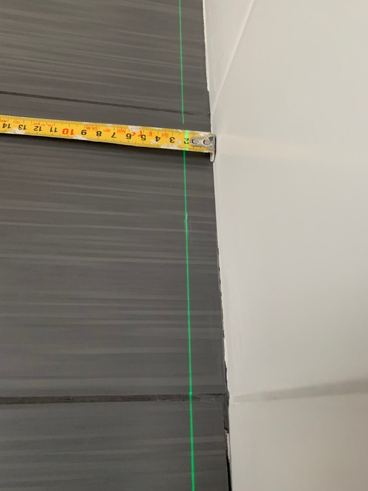

NeuvontaNeuvonta ja suunnittelu
Neuvon, mitä ratkaisuja kannattaa käyttää ja missä järjestyksessä työt tehdään. Oikea suunnitelma alussa säästää rahaa ja hermoja myöhemmin.
- Materiaali- ja rakenneratkaisut
- Töiden oikea järjestys
- Tarjousten läpikäynti kanssasi
- Remontin aikataulun suunnittelu